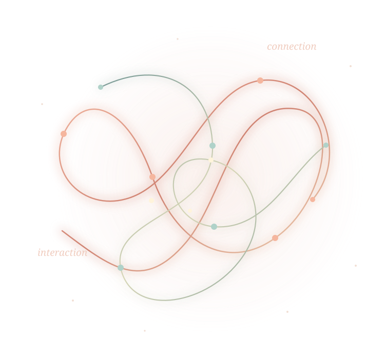
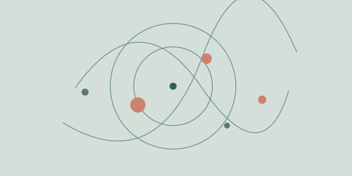

Understanding people, patterns & connection.
I study how romantic connections develop—and use quantitative methods to answer questions across relationship science and child and adolescent mental health research.

People · patterns · possibilitiesRelationship scientist. Quantitative researcher. Interdisciplinary collaborator.
A little about me ↗A focused program.
Broad applications.
My independent research centers on romantic relationships. My methodological expertise and collaborative mental health work extend the questions I can tackle—and the people I can work with.

Relationship science
Romantic chemistry, attraction, partner evaluation, and the development of close relationships.
Explore relationship research ↗Quantitative methods
Psychometrics, dyadic and longitudinal models, structural equation modeling, and R.
See methods & skills ↗Youth mental health
Quantitative contributions to research on depression, cognition, family functioning, and technology use.
Explore mental health work ↗The questions change.
The rigor travels.
Why do some people feel an immediate connection? How can we separate a person's characteristics from what two people experience together? What can repeated measurements reveal about mental health over time?
I approach these questions with theory-informed designs, transparent analysis, and methods suited to complex psychological data.
How I work with data ↗Making the spark measurable.
My dissertation develops and evaluates the Romantic Chemistry (RoCh) Scale, examining the experience of connection across dating and established relationships. The measure assesses five complementary dimensions.
Explore the preprint ↗Preprint · Not yet peer reviewed
Selected publications.
Inspiring better relationships? Trait charisma, conflict resolution, and relationship satisfaction
Personality Science
Read paper ↗ Quantitative methods 2025A renewal of dyadic structural equation modeling with latent variables
Social and Personality Psychology Compass
Read paper ↗ Mental health research 2026Depression and cognition in adolescents: Cross-sectional and longitudinal effects
Journal of Affective Disorders
Read paper ↗Good research crosses boundaries.
Interested in relationship science, a quantitative collaboration, or youth mental health research?